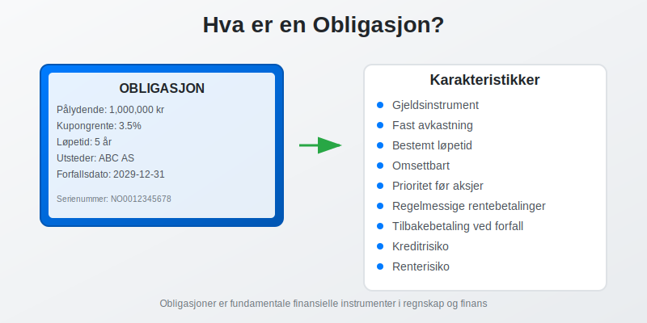
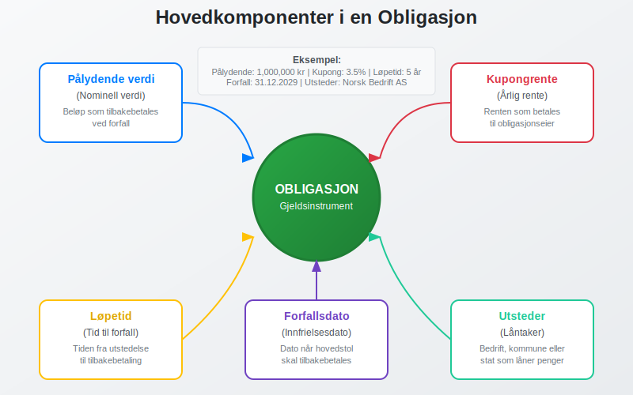
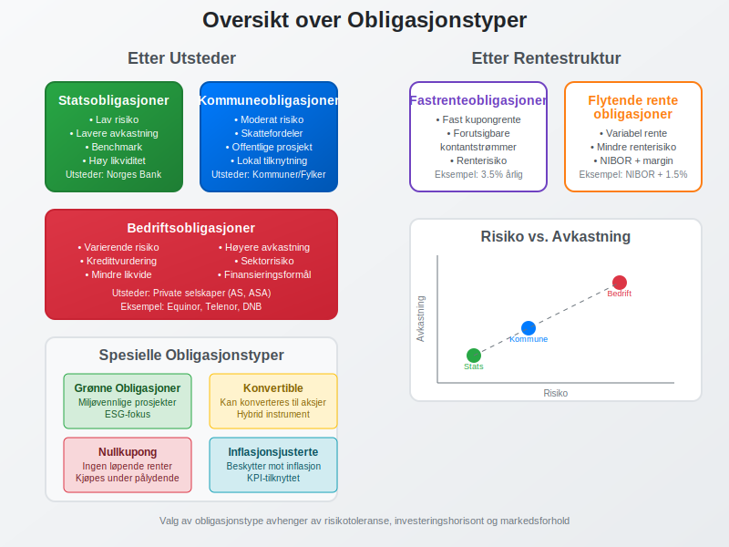
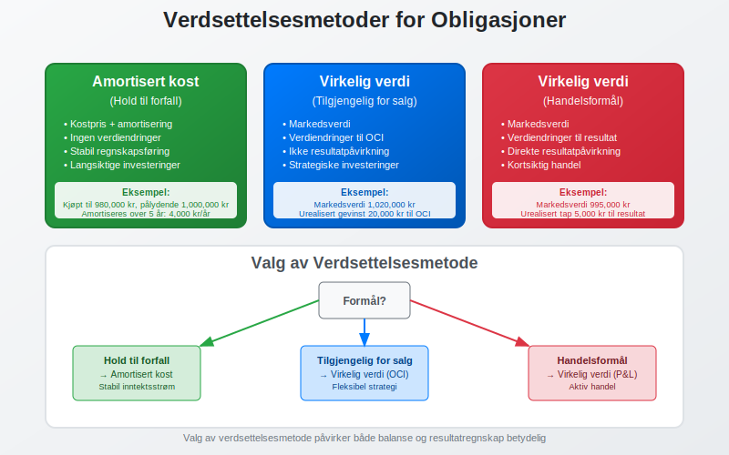
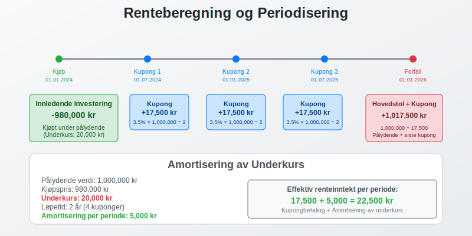
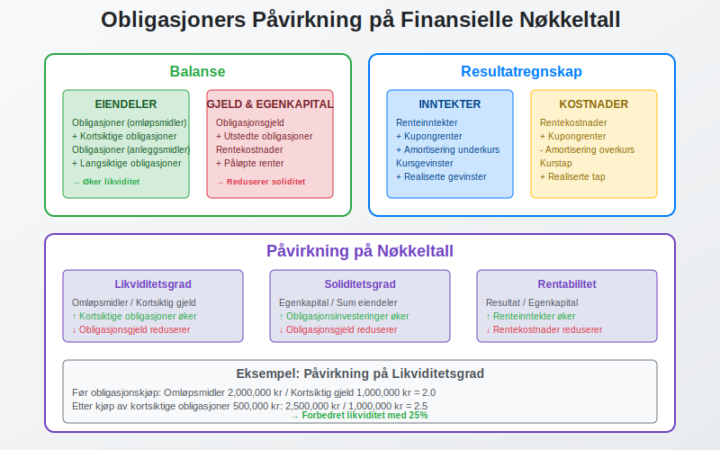
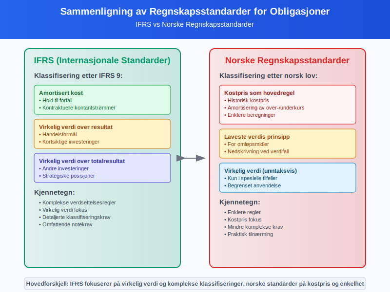
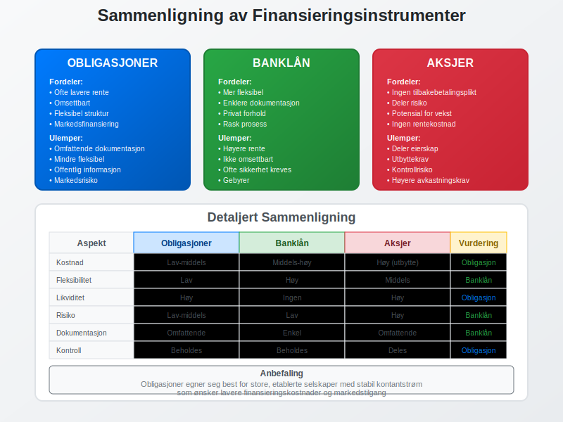
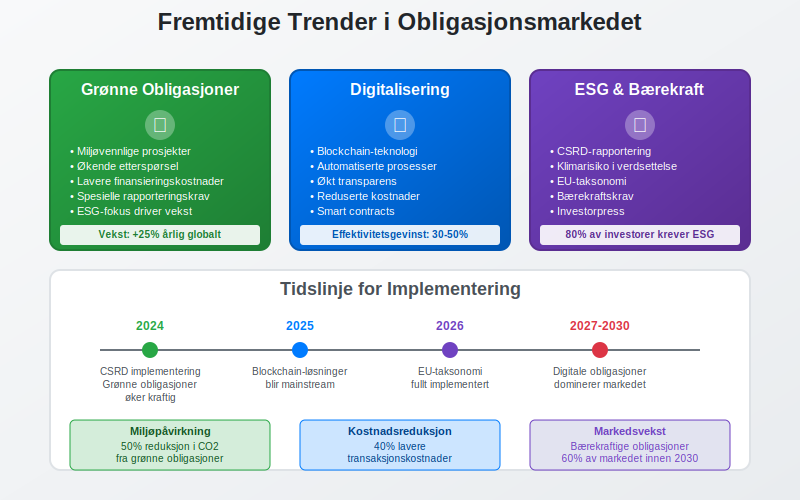

En obligasjon er et gjeldsinstrument som representerer et lån mellom en låntaker (utsteder) og en långiver (obligasjonseier). I regnskapssammenheng er obligasjoner viktige finansielle instrumenter som krever spesiell behandling og forståelse av deres påvirkning på bedriftens finansielle stilling.
For entydig identifikasjon av verdipapirer, se Hva er ISIN-nummer?.
For informasjon om emisjonsrabatt ved utstedelse av obligasjoner, se Hva er Disagio?.
For mer informasjon om fond som investerer i obligasjoner, se Hva er Obligasjonsfond?.

Definisjon av Obligasjon
En obligasjon er et verdipapir som dokumenterer en gjeldsforpliktelse. Når en bedrift eller offentlig myndighet utsteder en obligasjon, låner de penger fra investorer mot å betale tilbake hovedstolen på et bestemt tidspunkt, samt betale renter underveis.
Hovedkomponenter i en Obligasjon
- Pålydende verdi (nominell verdi) - det beløpet som skal tilbakebetales ved forfall
- Kupongrente - den årlige renten som betales til obligasjonseieren
- Løpetid - tiden fra utstedelse til forfall
- Forfallsdato - datoen når hovedstolen skal tilbakebetales
- Utsteder - den som låner pengene (bedrift, kommune, stat)

Typer Obligasjoner
Etter Utsteder
Statsobligasjoner
Utstedt av den norske stat og regnes som de sikreste obligasjonene:
- Lav risiko - staten har høy kredittverdighet
- Lavere avkastning - reflekterer den lave risikoen
- Benchmark for andre obligasjoner i markedet
- Ofte brukt som sikre investeringer i porteføljer
Kommuneobligasjoner
Utstedt av norske kommuner og fylkeskommuner:
- Moderat risiko - avhenger av kommunens økonomi
- Skattefordeler kan gjelde for enkelte investorer
- Finansierer offentlige prosjekter og infrastruktur
Bedriftsobligasjoner
Utstedt av private selskaper for å finansiere virksomheten:
- Varierende risiko - avhenger av selskapets finansielle stilling
- Høyere avkastning enn statsobligasjoner
- Krever grundig analyse av utsteders kredittverdighet
Etter Rentestruktur
Fastrenteobligasjoner
- Fast kupongrente gjennom hele løpetiden
- Forutsigbare kontantstrømmer
- Renterisiko - verdien påvirkes av renteendringer
Flytende renteobligasjoner
- Variabel rente som justeres periodisk
- Mindre renterisiko enn fastrenteobligasjoner
- Renten knyttes ofte til en referanserente som NIBOR

Regnskapsmessig Behandling
Klassifisering i Regnskapet
Obligasjoner klassifiseres forskjellig avhengig av om bedriften er utsteder eller eier:
Som Utsteder (Gjeld)
Når bedriften utsteder obligasjoner, klassifiseres de som gjeld:
- Kortsiktig gjeld - forfaller innen 12 måneder
- Langsiktig gjeld - forfaller etter 12 måneder
- Føres til amortisert kost
Som Investor (Eiendel)
Når bedriften eier obligasjoner, klassifiseres de som finansielle eiendeler:
- Omløpsmidler - kortsiktige investeringer
- Anleggsmidler - langsiktige investeringer
- Verdsettes etter formålet med investeringen
Verdsettelsesmetoder
| Kategori | Verdsettelsesmetode | Verdiendringer |
|---|---|---|
| Hold til forfall | Amortisert kost | Ikke resultatført |
| Handelsformål | Virkelig verdi | Resultatført |
| Tilgjengelig for salg | Virkelig verdi | Egenkapital |

Regnskapsføring av Obligasjoner
Ved Kjøp av Obligasjoner
Når en bedrift kjøper obligasjoner, regnskapsføres transaksjonen slik:
Debet: Obligasjoner (eiendel)
Kredit: Bank/Kontanter
Eksempel: Kjøp av obligasjon pålydende 1 000 000 kr til kurs 102:
- Kostpris: 1 020 000 kr
- Overkurs: 20 000 kr
Renteberegning og Periodisering
Obligasjonsrenter må periodiseres korrekt:
- Påløpte renter regnskapsføres som inntekt eller kostnad
- Kupongrenter regnskapsføres når de mottas/betales
- Amortisering av over-/underkurs fordeles over løpetiden

Risikofaktorer ved Obligasjoner
Kreditrisiko
Risikoen for at utsteder ikke kan oppfylle sine forpliktelser:
- Vurdering gjennom kredittvurderingsbyråer (Moody’s, S&P, Fitch)
- Overvåking av utsteders finansielle utvikling
- Diversifisering for å redusere konsentrasjonsrisiko
Renterisiko
Risikoen for verdiendringer ved renteendringer:
- Durasjon måler følsomheten for renteendringer
- Lange obligasjoner har høyere renterisiko
- Fastrenteobligasjoner påvirkes mer enn flytende
Likviditetsrisiko
Risikoen for ikke å kunne selge obligasjonen raskt:
- Markedsdybde påvirker likviditeten
- Bedriftsobligasjoner ofte mindre likvide enn statsobligasjoner
- Bid-ask spread indikerer likviditetskostnader
Obligasjoner i Finansiell Analyse
Nøkkeltall for Obligasjoner
| Nøkkeltall | Formel | Betydning |
|---|---|---|
| Løpende avkastning | Årlig kupong / Markedspris | Årlig avkastning |
| Avkastning til forfall | IRR av alle kontantstrømmer | Total avkastning |
| Durasjon | Vektet gjennomsnitt av kontantstrømmer | Renterisiko |
| Konveksitet | Endring i durasjon | Ikke-lineær renterisiko |
Påvirkning på Finansielle Nøkkeltall
Obligasjoner påvirker viktige finansielle nøkkeltall:
- Likviditetsgrad - kortsiktige obligasjoner øker likviditeten
- Soliditetsgrad - obligasjonsgjeld reduserer soliditeten
- Rentekostnader - påvirker driftsresultatet

Skattemessige Forhold
For Obligasjonseiere
Renteinntekter
- Skattepliktige som kapitalinntekt
- Periodiseres etter opptjeningsprinsippet
- Kildeskatt kan gjelde for utenlandske obligasjoner
Kursgevinster og -tap
- Realiserte gevinster/tap er skattepliktige/fradragsberettigede
- Urealiserte verdiendringer ikke skattepliktige
- Valutagevinster på utenlandske obligasjoner beskattes
For Obligasjonsutstedere
- Rentekostnader er fradragsberettigede
- Emisjonskostnader kan aktiveres og amortiseres
- Innfrielse over/under pålydende påvirker skattepliktig inntekt
Internasjonale Regnskapsstandarder
IFRS-krav
Under IFRS klassifiseres obligasjoner etter IFRS 9:
- Amortisert kost - hold til forfall
- Virkelig verdi over resultat - handelsformål
- Virkelig verdi over totalresultat - andre investeringer
Norske Regnskapsstandarder
Under norsk regnskapslov gjelder enklere regler:
- Kostpris som hovedregel
- Laveste verdis prinsipp for omløpsmidler
- Virkelig verdi kun i spesielle tilfeller

Praktiske Eksempler
Eksempel 1: Kjøp av Statsobligasjon
Situasjon: Bedrift kjøper statsobligasjon pålydende 500 000 kr, kupongrente 3%, løpetid 5 år, til kurs 98.
Regnskapsføring ved kjøp:
Debet: Obligasjoner 490 000 kr
Kredit: Bank 490 000 kr
Årlig renteberegning:
- Kupongbetaling: 500 000 × 3% = 15 000 kr
- Amortisering av underkurs: (500 000 - 490 000) ÷ 5 = 2 000 kr
- Total renteinntekt: 15 000 + 2 000 = 17 000 kr
Eksempel 2: Utstedelse av Bedriftsobligasjon
Situasjon: Bedrift utsteder obligasjon pålydende 2 000 000 kr, kupongrente 4%, løpetid 3 år, til kurs 101.
Regnskapsføring ved utstedelse:
Debet: Bank 2 020 000 kr
Kredit: Obligasjonsgjeld 2 020 000 kr
Årlig kostnad:
- Kupongbetaling: 2 000 000 × 4% = 80 000 kr
- Amortisering av overkurs: (2 020 000 - 2 000 000) ÷ 3 = 6 667 kr
- Total rentekostnad: 80 000 - 6 667 = 73 333 kr
Obligasjoner vs. Andre Finansieringsinstrumenter
Sammenligning med Banklån
| Aspekt | Obligasjoner | Banklån |
|---|---|---|
| Fleksibilitet | Mindre fleksibel | Mer fleksibel |
| Kostnad | Ofte lavere rente | Høyere rente + gebyrer |
| Sikkerhet | Kan være usikret | Ofte sikret |
| Omsettbarhet | Kan omsettes | Ikke omsettbart |
| Dokumentasjon | Omfattende | Enklere |
Sammenligning med Aksjer
| Aspekt | Obligasjoner | Aksjer |
|---|---|---|
| Eierskap | Ingen eierrett | Eierrett |
| Avkastning | Fast/forutsigbar | Variabel |
| Risiko | Lavere | Høyere |
| Prioritet | Før aksjonærer | Etter kreditorer |
| Løpetid | Bestemt | Ubestemt |

Obligasjonsmarkedet i Norge
Markedsstruktur
Det norske obligasjonsmarkedet består av:
- Primærmarked - nyutstedelser
- Sekundærmarked - handel med eksisterende obligasjoner
- Oslo Børs - organisert markedsplass
- OTC-markedet - direkte handel mellom parter
Viktige Aktører
- Utstedere - stat, kommuner, bedrifter
- Investorer - banker, forsikringsselskaper, pensjonsfond
- Meglere - formidler handel
- Markedsmakere - sørger for likviditet
Regulering og Tilsyn
- Finanstilsynet - overvåker markedet
- Verdipapirhandelloven - regulerer handel
- Prospektforskriften - krav til informasjon
- MiFID II - europeiske regler
Fremtidige Utviklingstrekk
Grønne Obligasjoner
Grønne obligasjoner finansierer miljøvennlige prosjekter:
- Økende popularitet blant investorer
- Spesielle rapporteringskrav for bruk av midler
- Lavere finansieringskostnader for utstedere
- ESG-fokus driver etterspørselen
Digitalisering
- Blockchain-teknologi for utstedelse og handel
- Automatiserte kuponbetalinger
- Økt transparens og effektivitet
- Reduserte transaksjonskostnader
Bærekraftsrapportering
- Bærekraftskrav for obligasjonsutstedere
- Klimarisiko i verdsettelse
- Grønn taksonomi påvirker klassifisering

Konklusjon
Obligasjoner er fundamentale finansielle instrumenter som spiller en viktig rolle i både bedrifters finansiering og investering. For regnskapsførere og finansielle analytikere er det essensielt å forstå:
- Regnskapsmessig behandling av obligasjoner som gjeld og eiendel
- Verdsettelsesmetoder og deres påvirkning på regnskapet
- Risikofaktorer og hvordan de håndteres
- Skattemessige konsekvenser av obligasjonsinvesteringer
- Markedsdynamikk og fremtidige utviklingstrekk
Korrekt håndtering av obligasjoner i regnskapet sikrer nøyaktig finansiell rapportering og gir grunnlag for gode finansielle beslutninger. Med økende fokus på bærekraft og digitalisering vil obligasjonsmarkedet fortsette å utvikle seg, noe som krever kontinuerlig oppdatering av kunnskap og praksis.
Ved å forstå obligasjoners kompleksitet kan bedrifter optimalisere sin kapitalstruktur og investorer kan ta informerte beslutninger om sine porteføljer.